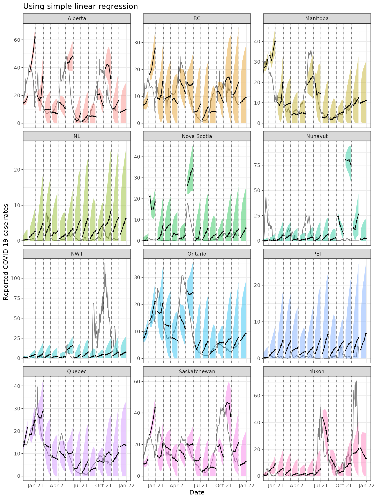
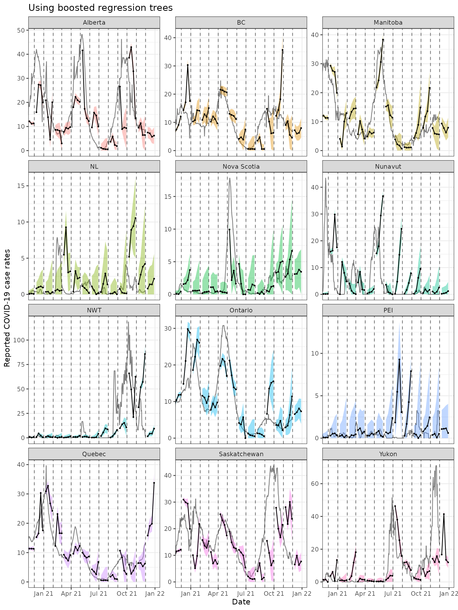
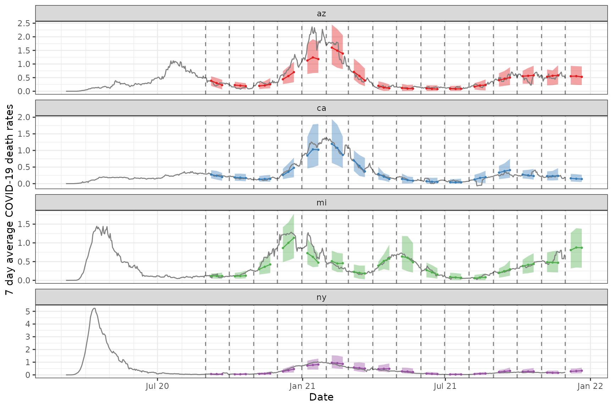

library(epipredict)
library(epidatr)
library(data.table)
library(dplyr)
library(tidyr)
library(ggplot2)
library(magrittr)
library(purrr)Demonstrations of sliding AR and ARX forecasters
A key function from the epiprocess package is
epix_slide() (refer to the following vignette for the
basics of the function: “Work
with archive objects and data revisions”) which allows performing
version-aware computations. That is, the function only uses data that
would have been available as of time t for that reference time.
In this vignette, we use epix_slide() for backtesting
our arx_forecaster on historical COVID-19 case data from
the US and from Canada. We first examine the results from a
version-unaware forecaster, comparing two different fitting engines and
then we contrast this with version-aware forecasting. The former will
proceed by constructing an epi_archive that erases its
version information and then use epix_slide() to forecast
the future. The latter will keep the versioned data and proceed
similarly by using epix_slide() to forecast the future.
Comparing different forecasting engines
Example using CLI and case data from US states
First, we download the version history (ie. archive) of the percentage of doctor’s visits with CLI (COVID-like illness) computed from medical insurance claims and the number of new confirmed COVID-19 cases per 100,000 population (daily) for all 50 states from the COVIDcast API.
Load a data archive
We process as before, with the modification that we use
sync = locf in epix_merge() so that the last
version of each observation can be carried forward to extrapolate
unavailable versions for the less up-to-date input archive.
theme_set(theme_bw())
y <- readRDS("all_states_covidcast_signals.rds") %>%
purrr::map(~ select(.x, geo_value, time_value, version = issue, value))
x <- epix_merge(
y[[1]] %>% rename(percent_cli = value) %>% as_epi_archive(compactify = FALSE),
y[[2]] %>% rename(case_rate = value) %>% as_epi_archive(compactify = FALSE),
sync = "locf",
compactify = TRUE
)
rm(y)We then obtaining the latest snapshot of the data and proceed to fake
the version information by setting version = time_value.
This has the effect of obtaining data that arrives exactly at the day of
the time_value.
# Latest snapshot of data, and forecast dates
x_latest <- epix_as_of(x, version = max(x$versions_end)) %>%
mutate(version = time_value) %>%
as_epi_archive()
fc_time_values <- seq(
from = as.Date("2020-08-01"),
to = as.Date("2021-11-01"),
by = "1 month"
)
aheads <- c(7, 14, 21, 28)
forecast_k_week_ahead <- function(epi_archive, outcome, predictors, ahead = 7, engine) {
epi_archive %>%
epix_slide(
.f = function(x, gk, rtv) {
arx_forecaster(
x, outcome, predictors, engine,
args_list = arx_args_list(ahead = ahead)
)$predictions %>%
mutate(engine_type = engine$engine) %>%
pivot_quantiles_wider(.pred_distn)
},
.before = 120,
.versions = fc_time_values
)
}
# Generate the forecasts and bind them together
fc <- bind_rows(
map(aheads, ~ forecast_k_week_ahead(
x_latest,
outcome = "case_rate",
predictors = c("case_rate", "percent_cli"),
ahead = .x,
engine = linear_reg()
)),
map(aheads, ~ forecast_k_week_ahead(
x_latest,
outcome = "case_rate",
predictors = c("case_rate", "percent_cli"),
ahead = .x,
engine = rand_forest(mode = "regression")
))
)Here, arx_forecaster() does all the heavy lifting. It
creates leads of the target (respecting time stamps and locations) along
with lags of the features (here, the response and doctors visits),
estimates a forecasting model using the specified engine, creates
predictions, and non-parametric confidence bands.
To see how the predictions compare, we plot them on top of the latest case rates. Note that even though we’ve fitted the model on all states, we’ll just display the results for two states, California (CA) and Florida (FL), to get a sense of the model performance while keeping the graphic simple.
Code for plotting
fc_cafl <- fc %>%
tibble() %>%
filter(geo_value %in% c("ca", "fl"))
x_latest_cafl <- x_latest$DT %>%
tibble() %>%
filter(geo_value %in% c("ca", "fl"))
p1 <- ggplot(fc_cafl, aes(target_date, group = forecast_date, fill = engine_type)) +
geom_line(
data = x_latest_cafl, aes(x = time_value, y = case_rate),
inherit.aes = FALSE, color = "gray50"
) +
geom_ribbon(aes(ymin = `0.05`, ymax = `0.95`), alpha = 0.4) +
geom_line(aes(y = .pred)) +
geom_point(aes(y = .pred), size = 0.5) +
geom_vline(aes(xintercept = forecast_date), linetype = 2, alpha = 0.5) +
facet_grid(vars(geo_value), vars(engine_type), scales = "free") +
scale_x_date(minor_breaks = "month", date_labels = "%b %y") +
scale_fill_brewer(palette = "Set1") +
labs(x = "Date", y = "Reported COVID-19 case rates") +
theme(legend.position = "none")
For the two states of interest, simple linear regression clearly performs better than random forest in terms of accuracy of the predictions and does not result in such in overconfident predictions (overly narrow confidence bands). Though, in general, neither approach produces amazingly accurate forecasts. This could be because the behaviour is rather different across states and the effects of other notable factors such as age and public health measures may be important to account for in such forecasting. Including such factors as well as making enhancements such as correcting for outliers are some improvements one could make to this simple model.1
Example using case data from Canada
Data and forecasts. Similar to the above.
By leveraging the flexibility of epiprocess, we can
apply the same techniques to data from other sources. Since some
collaborators are in British Columbia, Canada, we’ll do essentially the
same thing for Canada as we did above.
The COVID-19 Canada Open Data Working Group collects daily time series data on COVID-19 cases, deaths, recoveries, testing and vaccinations at the health region and province levels. Data are collected from publicly available sources such as government datasets and news releases. Unfortunately, there is no simple versioned source, so we have created our own from the Github commit history.
First, we load versioned case rates at the provincial level. After
converting these to 7-day averages (due to highly variable provincial
reporting mismatches), we then convert the data to an
epi_archive object, and extract the latest version from it.
Finally, we run the same forcasting exercise as for the American data,
but here we compare the forecasts produced from using simple linear
regression with those from using boosted regression trees.
# source("drafts/canada-case-rates.R)
can <- readRDS(system.file(
"extdata", "can_prov_cases.rds",
package = "epipredict", mustWork = TRUE
)) %>%
group_by(version, geo_value) %>%
arrange(time_value) %>%
mutate(cr_7dav = RcppRoll::roll_meanr(case_rate, n = 7L)) %>%
as_epi_archive(compactify = TRUE)
can_latest <- epix_as_of(can, version = max(can$DT$version)) %>%
mutate(version = time_value) %>%
as_epi_archive()
# Generate the forecasts, and bind them together
can_fc <- bind_rows(
map(
aheads,
~ forecast_k_week_ahead(can_latest, "cr_7dav", "cr_7dav", .x, linear_reg())
),
map(
aheads,
~ forecast_k_week_ahead(
can_latest, "cr_7dav", "cr_7dav", .x,
boost_tree(mode = "regression", trees = 20)
)
)
)The figures below shows the results for all of the provinces.
ggplot(
can_fc %>% filter(engine_type == "lm"),
aes(x = target_date, group = forecast_date)
) +
coord_cartesian(xlim = lubridate::ymd(c("2020-12-01", NA))) +
geom_line(
data = can_latest$DT %>% tibble(), aes(x = time_value, y = cr_7dav),
inherit.aes = FALSE, color = "gray50"
) +
geom_ribbon(aes(ymin = `0.05`, ymax = `0.95`, fill = geo_value),
alpha = 0.4
) +
geom_line(aes(y = .pred)) +
geom_point(aes(y = .pred), size = 0.5) +
geom_vline(aes(xintercept = forecast_date), linetype = 2, alpha = 0.5) +
facet_wrap(~geo_value, scales = "free_y", ncol = 3) +
scale_x_date(minor_breaks = "month", date_labels = "%b %y") +
labs(
title = "Using simple linear regression", x = "Date",
y = "Reported COVID-19 case rates"
) +
theme(legend.position = "none")
ggplot(
can_fc %>% filter(engine_type == "xgboost"),
aes(x = target_date, group = forecast_date)
) +
coord_cartesian(xlim = lubridate::ymd(c("2020-12-01", NA))) +
geom_line(
data = can_latest$DT %>% tibble(), aes(x = time_value, y = cr_7dav),
inherit.aes = FALSE, color = "gray50"
) +
geom_ribbon(aes(ymin = `0.05`, ymax = `0.95`, fill = geo_value),
alpha = 0.4
) +
geom_line(aes(y = .pred)) +
geom_point(aes(y = .pred), size = 0.5) +
geom_vline(aes(xintercept = forecast_date), linetype = 2, alpha = 0.5) +
facet_wrap(~geo_value, scales = "free_y", ncol = 3) +
scale_x_date(minor_breaks = "month", date_labels = "%b %y") +
labs(
title = "Using boosted regression trees", x = "Date",
y = "Reported COVID-19 case rates"
) +
theme(legend.position = "none")
Both approaches tend to produce quite volatile forecasts (point
predictions) and/or are overly confident (very narrow bands),
particularly when boosted regression trees are used. But as this is
meant to be a simple demonstration of sliding with different engines in
arx_forecaster, we may devote another vignette to work on
improving the predictive modelling using the suite of tools available in
epipredict.
Version-aware forecasting
Example using case data from US states
We will now employ a forecaster that uses properly-versioned data
(that would have been available in real-time) to forecast the 7 day
average of future COVID-19 case rates from current and past COVID-19
case rates and death rates for all states. That is, we can make
forecasts on the archive, x, and compare those to forecasts
on the latest data, x_latest using the same general set-up
as above. Note that in this example, we use a geo-pooled approach (using
combined data from all US states and territories) to train our
model.
Download data using {epidatr}
# loading in the data
states <- "*"
confirmed_incidence_prop <- pub_covidcast(
source = "jhu-csse",
signals = "confirmed_incidence_prop",
time_type = "day",
geo_type = "state",
time_values = epirange(20200301, 20211231),
geo_values = states,
issues = epirange(20000101, 20211231)
) %>%
select(geo_value, time_value, version = issue, case_rate = value) %>%
arrange(geo_value, time_value) %>%
as_epi_archive(compactify = FALSE)
deaths_incidence_prop <- pub_covidcast(
source = "jhu-csse",
signals = "deaths_incidence_prop",
time_type = "day",
geo_type = "state",
time_values = epirange(20200301, 20211231),
geo_values = states,
issues = epirange(20000101, 20211231)
) %>%
select(geo_value, time_value, version = issue, death_rate = value) %>%
arrange(geo_value, time_value) %>%
as_epi_archive(compactify = FALSE)
x <- epix_merge(confirmed_incidence_prop, deaths_incidence_prop, sync = "locf")
x <- x %>%
epix_slide(
.versions = fc_time_values,
function(x, gk, rtv) {
x %>%
group_by(geo_value) %>%
epi_slide_mean(case_rate, .window_size = 7L) %>%
rename(case_rate_7d_av = slide_value_case_rate) %>%
epi_slide_mean(death_rate, ..window_size = 7L) %>%
rename(death_rate_7d_av = slide_value_death_rate) %>%
ungroup()
}
) %>%
rename(version = time_value) %>%
rename(
time_value = slide_value_time_value,
geo_value = slide_value_geo_value,
case_rate = slide_value_case_rate,
death_rate = slide_value_death_rate,
case_rate_7d_av = slide_value_case_rate_7d_av,
death_rate_7d_av = slide_value_death_rate_7d_av
) %>%
as_epi_archive(compactify = TRUE)
saveRDS(x$DT, file = "case_death_rate_archive.rds")
x <- readRDS("case_death_rate_archive.rds")
x <- as_epi_archive(x)Here we specify the ARX model.
aheads <- c(7, 14, 21)
fc_time_values <- seq(
from = as.Date("2020-09-01"),
to = as.Date("2021-12-31"),
by = "1 month"
)
forecaster <- function(x) {
map(aheads, function(ahead) {
arx_forecaster(
epi_data = x,
outcome = "death_rate_7d_av",
predictors = c("death_rate_7d_av", "case_rate_7d_av"),
trainer = quantile_reg(),
args_list = arx_args_list(lags = c(0, 7, 14, 21), ahead = ahead)
)$predictions
}) %>%
bind_rows()
}We can now use our forecaster function that we’ve created and use it
in the pipeline for forecasting the predictions. We store the
predictions into the arx_preds variable and calculate the
most up to date version of the data in the epi archive and store it as
x_latest.
arx_preds <- x %>%
epix_slide(
~ forecaster(.x),
.before = 120, .versions = fc_time_values
) %>%
mutate(engine_type = quantile_reg()$engine) %>%
mutate(ahead_val = target_date - forecast_date)
x_latest <- epix_as_of(x, version = max(x$versions_end))Now we plot both the actual and predicted 7 day average of the death rate for the chosen states
Code for the plot
states_to_show <- c("ca", "ny", "mi", "az")
fc_states <- arx_preds %>%
filter(geo_value %in% states_to_show) %>%
pivot_quantiles_wider(.pred_distn)
x_latest_states <- x_latest %>% filter(geo_value %in% states_to_show)
p2 <- ggplot(fc_states, aes(target_date, group = forecast_date)) +
geom_ribbon(aes(ymin = `0.05`, ymax = `0.95`, fill = geo_value), alpha = 0.4) +
geom_line(
data = x_latest_states, aes(x = time_value, y = death_rate_7d_av),
inherit.aes = FALSE, color = "gray50"
) +
geom_line(aes(y = .pred, color = geo_value)) +
geom_point(aes(y = .pred, color = geo_value), size = 0.5) +
geom_vline(aes(xintercept = forecast_date), linetype = 2, alpha = 0.5) +
facet_wrap(~geo_value, scales = "free_y", ncol = 1L) +
scale_x_date(minor_breaks = "month", date_labels = "%b %y") +
scale_fill_brewer(palette = "Set1") +
scale_color_brewer(palette = "Set1") +
labs(x = "Date", y = "7 day average COVID-19 death rates") +
theme(legend.position = "none")